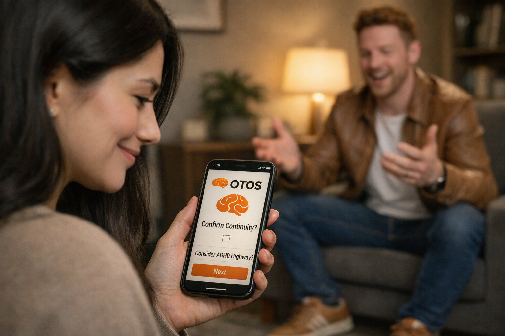

Named contact
One name per organisation
One named contact to answer quick workflow questions, confirm local red lines and help shape the safest route in. Not a project lead. Not a new role. One name.
This is a private briefing for the people who helped me through the system — and who I promised I would return with something that could help the next person get there faster and with less damage.
I walked through your door in crisis. Some of you saw me at my worst — in A&E at Addenbrooke's, negotiating my way into a detox I wasn't sure I qualified for. Some of you signed me up to CGL in an emergency. Some of you held me at RCE when I didn't know where else to go. Some of you are the CPFT ADHD team I was still waiting on — and I want you to know, I'm not angry. I understand why the list is long. That is exactly the problem I'm trying to solve.
I went private to get diagnosed. I paid for a psychiatrist because I couldn't wait any longer. And the moment I was medicated — within hours — my whole life made sense. The chaos, the addiction, the relapses, the shame. Not failures of willpower or treatment. What happens when the underlying neurological condition stays unresolved while services treat the visible damage.
I know there are people in your caseloads right now who cannot do what I did. They don't have the resources, the language, the luck or the fight left in them. That is the gap OTOS Continuity™ is trying to close.
12 weeks. 50 people. Cambridge and Peterborough. I need you in the room. Not to change what you do. Just to connect what already exists.
I promised I'd come back. I did it. Now help me help them.

"The moment the right treatment begins to hold."
One named contact. One 30-minute scoping conversation. That is all it takes to start.
Email Dean directly →We are not asking the system to change. Only to connect.
One named contact to answer quick workflow questions, confirm local red lines and help shape the safest route in. Not a project lead. Not a new role. One name.
When OTOS surfaces a drift signal or escalation flag, someone reviews it and records a decision. If the burden is too much, we change the model. You stay in control of every decision.
You, me, and whoever needs to be in the room. We map your pathway, agree the limits, and design the safest route in. No commitment required beyond that conversation.
Each page is written specifically for your organisation — your role in the pathway, what we're asking of you, and a support note ready to edit and send.
You were my last detox. I blagged my way in. OTOS means the next person doesn't have to — the handoff is logged before they leave the ward.
Open your page →You signed me up in an emergency. Annie wrote the letter. Rak backed me up. You know how often people cycle back without the thread ever holding.
Open your page →I'm still on your waiting list. OTOS doesn't solve that — it stops people falling out of contact while they wait for you.
Open your page →
You held me while I waited. That matters more than you know. OTOS gives that holding a thread — so when someone moves on, the continuity moves with them.
Open your page →

Right to Choose was how I finally got assessed. It should not require that level of navigation. OTOS makes that route visible and receipted from the start.
Open your page →Community support is where people land when everything else has run out. OTOS gives your work a thread into the wider pathway — no NHS record access needed.
Open your page →Cambridgeshire County Council? Open the Local Authority briefing →